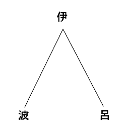
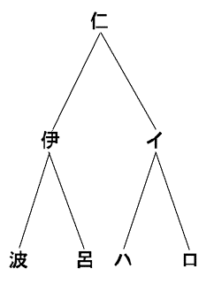
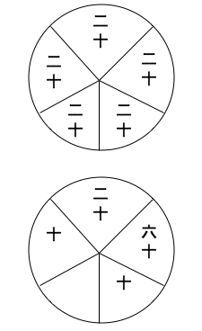

余、幼にして妖怪を聞くことを好み、長じてその理を究めんと欲し、事実を収集すること、ここにすでに五年。その今日まで、地方の書信の机上に
第一段 総論
第二段 コックリの仕方
第三段 コックリの伝来
第四段 コックリの原因
第二段 コックリの仕方
第三段 コックリの伝来
第四段 コックリの原因
明治二十年五月上旬
著者誌
［＃改ページ］洋の東西を論ぜず、世の古今を問わず、宇宙物心の諸象中、普通の道理をもって解釈すべからざるものあり。これを妖怪といい、あるいは不思議と称す。その妖怪、不思議と称するものにまたあまたの種類ありて、現今俗間に存するもの幾種あるを知らずといえども、しばらくこれを大別して二大種となす。すなわち、その第一種は内界より生ずるもの、第二種は外界に現ずるものこれなり。しかしてまた、内界より生ずるものに二種ありて、他人の媒介を経てことさらに行うものと、自己の身心の上に自然に発するものの別あり。ゆえに余は、妖怪の種類を分かちて、左の三種となさんとす。
第一種、すなわち外界に現ずるもの
幽霊、狐狸 、天狗 、犬神、祟 、その他諸怪異
第二種、すなわち他人の媒介によりて行うもの
第三種、すなわち自己の身心の上に発するもの
夢、夜行、神知、偶合 、俗説、再生、癲狂 、その他諸精神病
右の表を、あるいは左の図をもって示すべし。
┌外界（幽霊、狐狸等）
妖怪┤ ┌他人（巫覡、神降ろし等）
└内界┤
└自身（夢、夜行等）
今、この外界とはわが目前の物質世界をいい、内界とはわが体内の心性世界をいう。すなわち、夢、夜行等は心性の変動より生ずるはもちろん、巫覡、神降ろし等も心性作用の上に直接の関係を有するをもって、ここにこれを内界に属するなり。妖怪┤ ┌他人（巫覡、神降ろし等）
└内界┤
└自身（夢、夜行等）
この数種の妖怪の原因を解釈するの法、古今大いに異なるところあり。けだし、その異なるところあるは、人の賢愚、時代によりて同じからざるによる。古代の愚民は、万物おのおのその霊ありて奇異の作用を現ずるなりと信じ、あるいは一身重我といいて、一身に二様の
しかるに今日にありては、物理、化学等の規則に照らしてその証明を与えざるを得ざるゆえんを知り、はじめて普通の道理に基づきて解釈を下すに至る。これを要するに、古今、妖怪を解釈するにおおよそ三時期あり。すなわち、
第一は、万物各体の内に存する他体にその原因を帰すること
第二は、万物各体の外に存する天神にその原因を帰すること
第三は、天地自然の規則にその原因を帰すること
これなり。この第三時期の解釈法によりて定むるところの原因にまた三種あり。第二は、万物各体の外に存する天神にその原因を帰すること
第三は、天地自然の規則にその原因を帰すること
第一種は、外界一方より起こる原因
第二種は、内界一方より起こる原因
第三種は、内外両界相合して起こる原因
まず第一種の例を挙ぐるに、第二種は、内界一方より起こる原因
第三種は、内外両界相合して起こる原因
右のごとく、妖怪はたいてい内外両界相合して生ずるものなれども、なかんずく
コックリのはじめて俗間に行われたるは両三年以来のことなれども、今日にありては、いたるところこの法を試みざるはなく、これを試むるもの、吉凶禍福、細大のことに至るまで、ことごとくこれによりて卜見すべしと信ずるをもって、往々弊害を生ずるに至れり。余が聞くところによるに、大阪府下にては一時大いに流行したるも、その弊害したがって生ずるを見、警察署よりこれを禁じたりという。余がこのごろ各地方に流行する影響を察するに、またその弊害のすくなからざるを知る。今、その一例を挙ぐるに、伊豆下田近傍のもの、自身の妻に
小生、一夕某氏の宅を訪 いしに、老幼男女相集まり、コックリ様の遊戯をなすを目撃せり。そのとき種々さまざまのことをうかがうに、十中六七は当たるもののごとし。しかれども、同席の一人曰く、「既往のことはたいがい誤らざるも、将来のことは当たり難し」と。それはともかくも、同家に一人の病者（別席に臥 す）あり。その生死をうかがいしに、「本年某月某日に死す」と告げ、また同席の未婚女、その結婚の期日をうかがいしに、「本年中に結婚し、その夫は美なり」と。また他の一人、「地所を買い入れんとす。利益ありやいなや」と問えば、「あり」と答えり。その三、四名のもの将来の貧富を問いしに、「いずれも富む」と答え、しかして余もそのうちの一人なれども、もとよりこれを信ぜず。世人のこれを信じて盛んに流行するに至らば、その弊害挙げていうべからず。大方の君子、一日も早くこれが理を究めて、かの迷信者を諭されんことを切望の至りにたえざるなり。
この言にても知らるるごとく、コックリは児女輩の遊戯同様のものにて、近ごろ当府下にて流行の景況を見るに、書生輩の下宿屋に休日の晩には数名相会し、種々さまざまのことを問いかけて一夕の遊戯となし、市中にては往々、歌舞音曲を交えてコックリとともにおどり戯むる等、実に笑うべきの至りならずや。余、あらかじめその弊害あるを察し、これを研究して愚民の惑いを解かんと欲し、昨年来各地の報道を請うてその情況を調べ、また自らこれを試みてその原因を考え、このごろようやく、世人のこれを信ずるゆえんを明らかにしたるをもって、ここにその道理を述べて、いささか愚民に諭すところあらんとす。これ、余がこのことをあつめて、『妖怪玄談』第一集となすゆえんなり。今、これを論述するに当たり、その順序次第を立てざるべからず。ゆえに余は、第一にその仕方を説き、第二にその伝来を述べ、第三にその原因を論ずるなり。
［＃改ページ］
余が諸方より得たる報道によるに、コックリの仕方は、国々によりて不同ありて一定せざるもののごとし。今、左に二、三の報道を挙げて、その仕方を示さんとす。まず、
名古屋、岐阜をはじめ尾濃 いたるところ、当春来一時流行せしものは、その称を狐狗狸 また御傾 きと名づくるものなり。その方、生竹の長さ一尺四寸五分なるもの三本を造り、緒 をもって中央にて三叉 に結成し、その上に飯櫃 の蓋 を載せ、三人各三方より相向かいて座し、おのおの隻手あるいは両手をもって櫃の蓋を緩くおさえ、そのうちの一人はしきりに反復「狐狗狸様、狐狗狸様、御移り下され、御移り下され、さあさあ御移り、早く御移り下され」と祈念し、およそ十分間も祈念したるとき、「御移りになりましたらば、なにとぞ甲某が方へ御傾き下され」といえば、蓋を載せたるまま甲某が方へ傾くとともに、反対の竹足をあぐるなり。そのときは三人ともに手を緩く浮かべ、蓋を離るること五分ほどとす。それより後は、三人のうちだれにても種々のことを問うことを得べし。すなわち、「彼が年齢は何歳なるか、一傾 を十年とし、乙某または丙某が方へ御傾き下され」というとき、目的の人三十代なれば三傾し、五十代なれば五傾すべし。端数を問うに、これと同じくただ一年を一傾となすのみ。また「あなたは甚句 おどりは御好きか御嫌いか、御好きならば左回りを御願い申します」といえば、好きなれば回転し、嫌いなれば依然たり。このときもまた、手を浮かぶるなり。左右回りに代うるに、御傾き何べんと望むも、あえて効なきにあらず、かえって効あり。その他、なにの数を問うも、なにごとをたずぬるも、知りたることは必ず答えあり。甚句おどり、カッポレおどり、なににても好きなるものは、たとい三人は素人なるも、三叉 足が芸人の調子に合わせておもしろくおどるべし。このときまた、手を緩く浮かぶるなり。傍観者にしてうかがいたきことあるときは、三人のうちへ申し願いすべし。また、傍観者自ら代わりておさえんとするも勝手次第なり。識者もこれを実験して、その理に黙するあり。たとい黙せざるも、名称によりて答うるのみ。取るべき説なし。
生、これを研究せんと欲し、諸所に臨みて人の行うところを試むるに、信仰薄きものは、たとえ三十分間おさえおるも移ることなく、男女三人なればよく移り、空気流通して精神を爽快ならしむる場所にては移ること遅く、櫃の蓋の上に風呂敷を覆えば、なおよく移るなり。
生、これを研究せんと欲し、諸所に臨みて人の行うところを試むるに、信仰薄きものは、たとえ三十分間おさえおるも移ることなく、男女三人なればよく移り、空気流通して精神を爽快ならしむる場所にては移ること遅く、櫃の蓋の上に風呂敷を覆えば、なおよく移るなり。
また、茨城県太田町、前島某氏の報知によるに曰く、
（前略）竹の長さを九寸三分か、あるいは七寸三分に切りて、三本とも節 を中央に置き、その点を麻にて七巻き半巻きつけ、その上に金輪にあらざる飯鉢 の蓋を載せ、その蓋の内には狐狗狸の三字を書し、その蓋の上には奇数の手を載するを規則とす。つぎにその使用法は、若干の人その周囲に座し、実に丁重なる言語をもって、「コックリ様、御寄りになりましたら、早く御回りを願います」という。そのとき、載せたる蓋およびその上に緩く載せたる手、ともにわれわれの請求に応じて、あるいは左、あるいは右へ回転するなり。例えば、人の年齢をたずぬるとせんか。「なにがしの年は何歳なるや御分かりになりますか、御分かりになるなら左に御回りを願います」というときは、すなわち蓋および手ともに左へ回る。そのときまた、「十代なるか二十代なるか、十代なれば右へ、二十代なれば左へ」といって問うときは、もし十代ならば右へ回るなり。もしまたそのとき、「十代にて十幾歳なるか、十一歳なるか」と問うに、十一歳なれば動き、十一歳にあらざれば動かず。この方法によりて吉凶禍福のいかんをうかがうときは、右または左へ回転して、その暗答を得るなり。
また、千葉県香取郡飯塚村、寺本氏の報知によるに曰く、
近来、僻地においてコックリと称し、細き竹三本を一尺二寸ずつにきり、中央より少し下の方を麻にて七回り束ね、これに盆あるいは飯櫃 の蓋 を載せ、その上に布を加え、三人にて三方より手を掛け、暫時にして神の来臨ありと称し、それより禍福吉凶、その他いかなることがらにても、これにたずぬるに当たらざるなしと申して愚夫愚婦を迷わしめ、信ずるもの日に増し、ただいまにては真に神仏のなすところと妄想し、容易のことにてはその迷夢を覚破し難し。（中略）ある人の説に、これ電気の作用なりと申せども、これまた了解しがたし、云云 。
また、常州土浦町、五頭氏の報知によれば、「盆の裏へ狐狗狸の三字を指頭にて書き、それに風呂敷ようのものを掛け、これに
（前略）女竹 三本を節込みにて鯨尺 一尺四寸四分にきり、これを上より全長の十分の三、下より十分の七の所にて苧紐 にて結ぶ。その紐の長さも一尺四寸四分なり。しかして、この三本竹を叉 字形となし、その上に盆を伏せ、また茶碗に水と酒とを盛り、これを二本の竹の下に置き、三人のものはおのおの三本の指にて盆の上をおさえ、またほかに一人ありて、その傍らにひざまずき、崇敬の状を呈し、「コックリ様、御たずね申したきことあれば、なにとぞ御出で下され」としきりに言うこと二十分ないし三十分にして、たちまち三人の手辺りに力を生じ、そのきたりしを覚う。そのときに至り、例えば「甲ならば右の竹をあげよ、乙ならば左の竹をあげよ」と言えば、従って応ず。かくのごとくにして過去、未来のことを問うも、その応答、たいてい適中せざるはなし。また、コックリ様は女子を好むなどと申して、三人のものも一人の崇敬者も、ともに童女を用うるをよしという。
そのほか、
（前略）コックリに向かって問答をなす前に、その座に居合わす人々の中において、「汝 はいずれの人を好むや」とたずね、その好める人の指を風呂敷の上に加うるを要す、云云 。
このごろ宮城県
（前略）一尺二寸ずつの竹三本を、左によりたる長さ三尺の麻縄にて、七回半にまといて竪 結びに結び付け、竹の中に狐 、天狗 、狸 と書きたる札を入れ、竹の口を火にてあたため、その上にまたあたためたる塗り盆をいただかせ、風呂敷にてこれを覆い、女児三人、左手を静かにその上に加え、その傍らにて、あるいは太鼓を打ち、あるいは唱歌して、いろいろ囃 し立つるときは、その盆が回り始むるなり。（中略）天井のある座敷にては、いかに囃し立つるも、一向に感覚を惹 き起こさずして回ることなし、云云。
余が昨年伊豆国に遊び、その地にてなすところを見るに、竹の上に載せたるまた、東京および横浜などにて近日なすところを見るに、その仕方、大体同一なるも、多少異なるところなきにあらず。今、日本橋区長谷川町、増永氏よりの報知を挙げて示すこと、左のごとし。
（前略）丸竹の細さ人の指ぐらいのもの三本のうち、二本は長さ九寸、他の一本は九寸五分にきり、その節 を抜き取り、麻糸を左によりたる紐 にて、右三本の竹を七巻きに結びて一束となし、さらに他の白紙三片を取りて、これに狐 、狸 、天狗 の三字を別々に記し、まるめて一つずつその一束の竹の中に入れ、その入れたる方を下にし、これを机または畳の上に据え置くなり、云云 。
府下牛込小石川辺りにてなすところを聞くに、「麻糸の中に婦人の髪の毛三筋入れ、その縄を以上、諸国に行わるるところの仕方は種々まちまちにして、一定の規則なきは明らかなり。竹の寸法、縄の巻き方、
（前略）座中の一人盆に向かい、よびて曰く、「狐狗狸 よ、狐狗狸よ、汝 の座をここに設けたり。速やかに来たれ」と。また曰く、「狐狗狸よ、狐狗狸よ、すでに来たらば、その兆しとして盆を右方にめぐらせ」と。また曰く、「この盆を右方にめぐらすをいとわば、なんぞ左方にめぐらさざるや」と。このとき、盆の徐々に運行するを見る。けだし、この動作たる、突然行わんと欲するもあたわず、少なくも三、四回以上これを試みざれば動かず。もっとも、一回この動作を呈せし家は、その後いずれの日にこれを行うも来たらざるなく、かつ、その来たるや迅速なり。また曰く、「その盆をして一周せしめよ」と。このとき、盆全く一周す。また曰く、「汝、狐なれば、この足（三本の竹のうち一本を指していう）をあげよ」と。このとき足あがらざるをもって、衆その狐にあらざるを知る。また曰く、「汝、天狗ならばこの足をあげよ」と。このときまた足あがらざるをもって、衆その天狗にあらざるを知る。また曰く、「しからば汝、猫ならんか。果たして猫ならばこの足をあげよ」と。このとき竹の足あがること一寸ばかりゆえに、猫の来たると仮定す。また曰く、「汝、この足を三寸ほどあげよ」と。このとき竹の足あがること三寸。また曰く、「汝は甲村より来たるや。もし、果たして甲村に住するものならばこの足をあげよ」と。このとき足あがらざるをもって、すなわち甲村より来たらざるを知る。また曰く、「もし乙村ならばこの足をあげよ」と。このとき足あがるゆえに、乙村より来たるものと断定す。また曰く、「汝 は楽戯 に来たるや」と。このとき足あがらざるゆえ、楽戯にあらずと断定す。また曰く、「しからば、汝は物 教 えに来たるか。物教えに来たるならばこの足をあげよ」と。このとき竹の足あがる。すなわち、その吉凶禍福を告ぐるために来たるを知る。また曰く、「某の家には出火等の禍 ありや」と。このとき足あがらず。すなわち、災いのなきを知る。また曰く、「しからば、某の家には幸福ありや。もし幸福あらばこの足をあげよ」と。このとき足あがらず。また曰く、「しからば、福きたらざるか」と。このときまた足あがらず。また曰く、「しからば、いまだ全く明らかならざるか」と。このとき足あがる。すなわち、禍福いまだ知れずと判断す。また曰く、「汝の年齢は幾歳なりや。一歳を一足としてこの足をあげよ」と。このとき竹の足あがること十回なるをもって、この猫の年齢十歳なるを知る。また曰く、「明日は晴天なればこの足をあげよ」と。このとき足あがらず。また曰く、「しからば、明日は雨天なりや」と。このときまた足あがらず。また曰く、「しからば、雪天なりや」と。このとき一本の足徐々としてあがる。衆、すなわち翌日は降雪と断定す。（中略）また、コックリに向かって問うて曰く、「汝は一本の足にておどるや」と。このとき足あがらず。また問う、「汝は三本の足にておどるや」と。このとき足あがらず。また問う、「汝二本の足にておどるや」と。このとき足あがる。すなわち、その二本の足にておどるべしと断定す。また問う、「軍歌にておどるや」と。このとき足あがらず。また問う、「情死節 にておどるや」と。このとき足あがらず。また問う、「しからば相撲甚句 にておどるや」と。このとき竹の足あがる。よって一人、相撲甚句を歌い、竹の足二本とその歌の調子に合わせ、こもごもその足を上下す。歌人の音声清らかにして調子熟すれば、その足の上下一層迅速にして、座中を縦横におどりあがる。すでにこのときに当たりては、これまで三人にてなしたるも、ただ一人にて、よくその足をして上下せしむることを得るに至る。
以上はその一例の概略を記載せしものなり。その他、小生の実験するところによるに、晴雨、年齢のほかに時間、人数、文字等のことをたずぬるも、大抵みな適中すといえども、例えば一つの書籍を取りて、この紙数は幾枚ありと問うがごとき、綿密なることは確答を得ること難し。また、狐、狗 、狸、猫のほか種々の獣類至らざるなしといえども、なかんずく天狗と名づくるものの来たるときは、その予言もっともよく事実に適中し、衆人の最も信用を置くところなり。臼、木鉢、皿等の重量のものをめぐらして、よくその足をあぐるは、大抵この天狗の来たるときに限る、云云 。
以上はその一例の概略を記載せしものなり。その他、小生の実験するところによるに、晴雨、年齢のほかに時間、人数、文字等のことをたずぬるも、大抵みな適中すといえども、例えば一つの書籍を取りて、この紙数は幾枚ありと問うがごとき、綿密なることは確答を得ること難し。また、狐、
これによりてこれをみるも、コックリはよく未然のことを予言するの力あること明らかなり。このごろ近傍の
余、これを試みんと欲し、昨秋自宅において、前後数回試験を施したることあり。はじめに、ある学生四、五名とこれを試みしに、さらに要するところの成績を示さず。つぎに、いまだ学識に富まざる年少輩数名をその中に加えて試みしも、なおはかばかしき効験を見ず。つぎに、その年少輩と四十前後の婦人とをしてこれを験せしむるに、果たして要するところの成績を得たり。その後十余日を経て、再びその年少輩と婦人と余と数名相会して、大小、長短一定せざるいろいろの竹をとり、いろいろの
［＃改ページ］
今、コックリの原因事情を究明するに当たり、まずここに、その起源、伝来を叙述するを必要なりとす。余、そのいずれの地にはじめて起こり、たれびとの発明せしものなるやを究めんと欲し、諸国の有志にその流行のありさまを問い合わせたるに、今日まで余の手もとに達したる報知によるに、一昨明治十八年の秋より昨十九年の春にわたりて、
余が捜索せしところによるに、その流行の情況、あたかも波及の勢いをなせり。けだし、そのはじめて起こりし地は
一昨昨年ごろのこととかや、アメリカの帆走船、豆州下田近傍に来たりて破損したることあり。その破船の件に関して、アメリカ人中久しくその地に滞在せしものありて、この法を同地の人民に伝えたりという。そのとき、アメリカ人は英語をもってその名を呼びたるも、その地のもの英語を解せずして、その名の呼び難きをもって、コックリの名を与うるに至りたるなり。けだし、コックリとはコックリと傾くを義として、竹の上に載せたる
かくのごとく定むるときは、さらに進みて、西洋にこの法の存するやいなやを考うるを必要なりとす。余が聞くところによるに、西洋に従来、テーブル・ターニングと称するものあり。この語、テーブルの回転を義として、その法、コックリ様と
今、カーペンター氏の『心理書』中に挙ぐるところの一例を引きてこれを示すに、ジップシンと称するもの、その友人一名とともにテーブルに向かい、「当代の女王は王位に昇りて以来、幾年を経過せしや」と問いたるに、テーブルその床をうちて、「十六年なり」と答えたり。また、その太子の年齢をたずねたるに、「十一歳なり」と答えたり。しかるに両人ともに、当代の女王即位の年月と太子の年齢とを知らざるをもって、年表について験するに、果たしてその答えのごとし。またつぎに、その家の店に幾人仕事しておるかをたずねたるに、三回床をうち、二回足をあげて答えたり。しかるに、店頭に大人四名と童子二名ありというを聞き、その三回床をうちたるは誤りなりと考えしに、しばらくありて、その一人は府外に出でて店にあらざるを想出し、はじめてその告ぐるところの真なることを知りしという。これらの形情を聞くに、その法、わが国に行わるるところのものと同一なること明らかなり。ただその異なるは、一はテーブルを用い、一は三本の竹と
これによりてこれをみるに、下田に来たりしアメリカ人は、かつてその本国にありしときこの法を知りたるものにして、その下田にあるの際、手もとに適宜のテーブルなきゆえ、臨時の思い付きにて、竹と蓋とをもってこれに代用したるならんと想像せらるるなり。しかして、そのアメリカ人はこの法を呼んでテーブル・ターニングとかいいて伝えたるも、その土地の者、洋語に慣れざるをもって、コックリの語を代用するに至りしなりと思わるるなり。ゆえに余は、コックリはすなわちテーブル・ターニングと同一なりと信ず。
［＃改ページ］
上段、すでにコックリの方法およびその伝来を述べたるをもって、これより道理上、その原因事情を説明せんと欲するなり。通常の人はその原因を考えて、これ
これ、余が狐狸、鬼神のほかにその原因を発見せんことを求むるゆえんなり。さらに疑いを起こしてこれを考うるに、その動くも、その傾くも、鬼神のこれに
今、余はこの原因を左の三種に定めて、いちいち説明せんと欲するなり。
第一は外界のみによりて起こる原因、すなわちコックリの装置自体より生ずる原因
第二は内外両界の中間に起こる原因、すなわち人の手とコックリの装置と相触れたるときの事情より生ずる原因
第三は内界のみによりて起こる原因、すなわち人の精神作用より生ずる原因
そのうち、第三の原因を最も大切なるものとす。しかして、第一の原因は格別説明を要するほどのものにあらざれども、これより次第に説き及ぼして第三に至るは、その順序よろしきをもって、まずはじめに第一の原因を述ぶべし。第一の原因は、コックリの装置すなわち三本の竹と
つぎに、第二の原因は内外両界の間に起こる原因にして、けだし、いかなるものも多少の時間、手を空中に浮かべて一物を支えんとするときは、必ず手に動揺を生ずるを見る。これ、活動物一般の常性にして、たといその一部分たりとも、永く静止して空中の一点に保つことあたわざるものなり。たといまた、衆人中一人ぐらいは手を静止することを得るも、衆人ことごとく同時に静止することあたわざるは必然なり。ゆえに、もしそのうちの一人、一寸手を動かせば、ただちにその動勢をコックリに伝え、二寸の動揺を示すべきは、装置の事情すでにしかるなり。これに他の人々の力の同時に加わることあるときは、またいくたの動揺を増すに至るべし。かくして、ひとたび回転したるものは、習慣性の規則に従って永く回転せんとするの勢いを生ず。別して衆人の力、再三重ねてこれに加わることあるときは、数回小回転ののち著しき大回転を見るに至るべし。そのはなはだしきに至りては、外よりこれを抑止せんと欲するも、ほとんど抑止すべからざるの勢いあるも、また自然の道理なり。
かくして、手も身体もともに動揺するの習慣を生ずるに至れば、これを無意無心に任ずるも、知らず識らず動揺するを見る。そのすでに動揺するに当たりては、手の一端にわずかに微力を加うるも、ただちに回転し、またたやすくその足をあぐるに至るべし。別してその回転の盛んなるに当たりては、おのおのその手を放ちてこれをその自然の勢いに任ずるも、室中を横行して踏舞の状を呈するに至るは、これまた習慣性の永続によるなり。
これを要するに、第一に、人をして数分間その手を蓋の上に浮かべしむるときは、必ず疲労を感じて動揺せんとするの事情あり。第二に、その装置すでに動揺しやすき組み立てを有するをもって、これに一寸の変動を与うるも、一尺の動揺を呈するの事情あり。第三に、一人これを動かせば、衆人これに響応して、ますます著しき動揺を生ずるの事情あり。第四に、数回重ねてこれに動揺を与うるときは、ますますその動勢を増進するの事情あり。第五に、数回回転の後は、手も身体もともに動揺するの習慣性を生じて、これを制止せんと欲するも、たやすく制止すべからざるの事情あり。第六に、その装置もまた習慣性を生じて、手をもってことさらにこれに触れざるも、自然の勢い回転を永続せんとするの事情あり。これらの諸事情あるによりて、コックリの回転を見、その回転はなはだしきに至れば、あるいは足をあげ、あるいは足を転じて踏舞の状をなし、室中を自在に横行するの勢いを示すに至るなり。
余、かつてこれを試むるに、二、三人にてなすよりは、四、五人にてなす方、よろしきように覚えたり。これ、衆人の力相加わること多ければ、ますます著しき回転を示すべき道理あるによる。しかれども、衆人の与うるところの動揺の調子、互いに相応合するにあらざれば、かえってその動揺を妨ぐるの事情あるをもって、三、四人にてなす方、かえってよろしきことあり。もし、その回転の際、一人不意に笑いを発してその調子をくるわするときは、たちまちその動揺をとどむるに至るは、けだし、この道理あるによる。しかれども、この第一、第二の原因のみにては、いまだコックリの説明を与えたりと称すべからず。なんとなれば、コックリはなにびとこれを行うも、必ずその効験あるにあらずして、生来信仰心の厚きもの、知力に乏しきもの、または婦女子のごとき感動しやすき性質を有するものありて、これに加わるときは、たやすくその回転を見、知力に長じ信仰力弱きものは、なにほど試験を施すも、これをしてその回転を示さしむることあたわず。これによりてこれをみれば、第一、第二の原因のほかに、別に考うべき事情あるべし。これ、余が第三の原因を設くるゆえんなり。
第三の原因は、コックリの説明を与うるに最も必要なる原因にして、これ全く心性作用よりきたるものなり。今、余は便宜のため、この原因を内因と外情とに分かちて説明せんと欲す。内因とは、人の心性自体の性質より生ずるものをいい、外情とは、その心性作用を促すところの種々の事情をいうなり。
まず第一に内因を述ぶるに、その主たるものを不覚筋動と予期意向の二者とす。今この二者を知らんと欲せば、不覚作用について一言せざるべからず。不覚作用とは、人のその心に識覚することなくして、自然に発動する心性作用をいう。ゆえに、あるいはこれを自動作用と称す。また、これを反射作用と称することあり。反射作用とは、刺激に応じてただちに起こる無意不覚作用を総称する名目なり。例えば、消化作用、呼吸作用はもちろん、外物の目に触るるときは知らず識らず目を閉じ、手足に刺激を受くるときは知らず識らず手足を動かすがごとき、みな反射作用なり。かくのごとき反射作用は、神経組織中の延髄、
今、この大脳の不覚作用を論ずるに当たり、まず不覚の一般に起こる原因事情について一言せざるべからず。およそ不覚の起こるに六種の事情あり。第一は習慣より生じ、第二は意向より生じ、第三は疲労より生じ、第四は眠息より生じ、第五は激動より生じ、第六は錯雑より生ずるなり。
まず第一の事情を述ぶるに、従来意力を用いてなしたることも、多年その一事をもって習慣となすときは、自らこれを識覚せずして自然に成るに至る。例えば詩歌を作るがごとし。そのはじめこれを稽古するに当たりては、いろいろ思慮工夫を用いてはじめて成りしも、多年勉強熟達したる後は、口を発すれば、その言おのずから詩となり歌となりて、ほとんど自らいかにしてその成りしを識覚せざることあり。これ、いわゆる習慣によりて、識覚有意作用の不覚無意作用に変じたる一例なり。また、人の書を読み経を
つぎに第二は、意力を一方に会注するときは、他方に不覚を生ずるの事情をいう。例えば、意を凝らして一心に読書するときは、心の全力その読書の一方に集まるをもって、他の部分にいかなる刺激を受くるも、自ら感覚せざることあるの類これなり。
第三は、心性の疲労したるときは、平常識覚せしことも識覚せざることあるの事情をいう。
第四は、人の眠息の間には、たとい夢中に工夫思慮することあるも、手足を動かし寝言を発することあるも、自ら識覚せざる事情をいう。
第五は、心性、思想の激動して感覚を失する事情にして、例えば火事のとき、また
第六は、種々の思想の錯雑混同して起こるときは、また自らなにをなしたるかを識覚せざるの事情にして、例えば、種々の心配の一心に集まるときは思想の混雑をきたして、往々識覚を失することあるの類をいう。
以上の諸事情によりて人に不覚作用の起こること、すでに知るべしといえども、その事情の起こるはいかなる原因によるや、いまだ明らかならざるをもって、ここにその原因を論究する、また必要なりとす。およそこれを論究するに二種の法あり。一は生理上より論究し、一は心理上より論究するこれなり。生理上より論究するは、心理研究に欠くべからざる法なりといえども、脳髄内部の形情関係は、生理学の実験いまだつまびらかならざるをもって、いちいちこれをその実験に照らして証明することあたわず。ゆえに、その証明すべからざるものに至りては、心理上より想像推論することあるべし。今、神経の構造を考うるに、神経繊維と神経細胞との二種ありて、その一は中枢作用をつかさどり、その一は伝導作用をつかさどる。その伝導をつかさどる神経にまた二種ありて、一は求心性神経と称して、神経の末端より中枢に伝うる作用を有するものをいい、一は遠心性神経と称して、中枢より末端に伝うる作用を有するものをいう。

今、仮に「伊」を中枢器とし、「呂」「波」を末端とし、「呂」より「伊」にわたる繊維を求心性神経と定め、「呂」より「波」にわたる繊維を遠心性神経と定めて論ずるに、「呂」点において受くるところの刺激は、次第に相伝えて「伊」に達し、「伊」点において起こるところの興奮は、次第に相伝えて「波」に達す。これを神経組織の一元素とす。しかれども、高等動物および人類の神経組織は、かくのごとき単純なるものにあらず。中枢にも、一部位の中枢と中央の中枢との数種あり、繊維にも、末端と中枢の間にわたるものと、中枢と中枢の間にわたるものとの数種ありて、極めて複雑なるものなり。

今、仮に「伊」を部位の中枢と定め、「仁」を中央の中枢と定めて論ずるに、「伊」および「イ」は
さらに進みてこれを考うるに、「呂」より入りきたるところのもの、あるいは「伊」に達してただちに「波」に向かって出ずるものあり、あるいは「伊」よりさかのぼりて「仁」に達するものあるはいかんというに、これ習慣、遺伝の影響に帰するよりほかなし。さきに挙ぐるところの呼吸作用および消化作用のごときは、遺伝の影響によるものなり。足によりて自然に歩行し、手によりて自然に運動するは、習慣より生ずるものなり。
今その例を示すに、最も簡便なるものは、俗に癖というものこれなり。人と互いに対座するの際、あるいは折々首をかくものあり、あるいは折々膝を擦するものあり、あるいは
しかるにまた、脳髄中の思想作用の、不覚作用に変ずることあるゆえんを考うるに、その不覚作用とは、「呂」より入りきたるところの動波「仁」に達して、なお自ら識覚せざることあるをいう。例えば、多年習練したるものの詩歌を作るときは、自らそのいかにして成るを識覚せずして自然に成るの類にして、これまた習慣より生ずること論をまたず。けだし、大脳中にも無数の神経細胞ありて、その細胞の間に連接する無数の神経繊維あり。その繊維と細胞との間に伝流する波道次第に熟習して、その出入の際、猶予の時を要せざるに至れば、大脳中の識覚作用も変じて不覚作用となるべし。これ、いわゆる習慣、経験によるものなり。

今、仮に「伊」「呂」「波」「仁」の四個の細胞、ならびにこれを連結する繊維、ともに大脳中にありて心性作用をつかさどるものと定めて論ずるに、「伊」の刺激を受くるときにはその興奮を「仁」に伝えて、「仁」のこれに伴って興奮すること数回に及べば、その間習慣性を養成して、「伊」の興奮するごとに、知らず識らず「仁」の興奮するを見る。これを心理上より論ずるときは、「伊」の思想起こるに伴って「仁」の思想の起こること数回に及ぶときは、その後「伊」の起こるごとに、自然に「仁」を
つぎに、意向によりて不覚作用の起こるゆえんを考うるに、意向は心力の一方に集合、

つぎに、疲労または眠息によりて不覚の起こるゆえんを考うるに、すべて活動物は一定の時間活動を営めば、必ず疲労するの規則を有す。身体を役すれば身体の上に疲労をきたし、心性を用うれば心性の上に疲労をきたすものなり。しかして、ひとたび疲労すれば、必ず一定の時間休息を取らざるべからず。ここにおいて眠息起こる。今、この疲労と眠息の間に起こる不覚作用を論ずるに、神経の全部疲労したるときは、その有するところの識覚力大いに衰うるをもって、たとい身体の一部分においていかなる作用を営むことあるも、自ら識覚せざることあり。また、神経の一部分疲労したるときは、他の部分は識覚するも、その部分は不覚となることあり。もし、その神経いったいに疲労して眠息を取るに至れば、全身の事情を識覚せざるは熟眠のときを見て知るべし。しかるに睡眠中といえども、往々夢を結びて種々の思想を起こし、あるいは夢中にありて種々工夫思慮して、新発明をなしたるの例少なからず。これ、いかなる理によるかをたずぬるに、睡眠中といえども、大脳中の一部分休息して、他の部分の識覚することあり。このとき夢を結ぶ。
しかして、その夢中に種々の思想の連起するは、さきに示すところの連想の規則により、その平常想出し発見すべからざることをよく発見するは、一は脳の一小部分ひとり
以上の諸事情によりて起こるところの不覚作用に、また数種あり。すなわち、思想作用を覚せざることあり、感覚作用を覚せざることあり、運動作用を覚せざることあり。例えば、夢中に工夫思慮して自ら識覚せざるがごときは、その第一種に属し、火事場に傷害を受けて自らその苦痛を覚せざるがごときは、その第二種に属し、歩行するの際、自らその歩行するを覚せざるは、その第三種に属す。しかしてまた、思想作用のその結果を筋肉の運動の上に生じて、自らその運動を識覚せざるもの、これをここに不覚筋動という。不覚筋動とは、筋肉の間に動作を現じて自らその動作を識覚せざるを義として、これをコックリ作用の主原因とするなり。例えば、人すでにその心にコックリの回転すべきを知るをもって、その自ら思うところのもの、知らず識らず筋肉の上に発現してその動作を営むをいう。他語もってこれをいえば、人おのおの自ら識覚せずして、自然にその手の運動をコックリの上に与うるによる。しかして、その運動を生ずる内因は予期意向なり。予期意向とは、あらかじめかくあるべしと自ら期して、その一方に意を注ぐをいう。これ、いわゆるさきの意向によりて生ずる不覚なり。
余がさきに略図をあげて示すごとく、神経には求心性、遠心性の二種ありて、外部に起こる刺激を大脳に伝えて感覚を生ずるは求心性の作用により、大脳の命令を外部に伝えて運動を示すは遠心性の作用による。しかしてその運動は、外部の刺激に応じて起こるものと、脳中の事情よりただちに発するものあり。その脳よりただちに発する運動に、識覚するものと識覚せざるものあり。その識覚せざるもの、これコックリの原因にして、余がいわゆる予期意向、不覚筋動の事情なり。ゆえに、もしこれを、さきに挙ぐるところの六種の不覚作用の原因に考うるときは、その第二の意向によりて生ずる不覚に属するものと知るべし。
今、さらに意向によりて不覚を生ずるゆえんを考うるに、人もし一方に心の全力を注ぐときは、他方に心力を現ぜざるに至り、あるいは一方の思想の発現して他方の運動を示すも、自ら識覚せざるに至るべし。例えば、子供がその目前に菓子あるを見て、一念にこれを味わわんと思うときは、知らず識らずその手を出だすに至り、また、人が音楽を聞きて一心にこれを聴かんとするときは、知らず識らずその方に耳を傾くるに至り、また
今、コックリの回転も、もとよりこの理に基づくものにして、これを試むる人は大抵みな、あらかじめコックリの回転するを知り、またその回転の、人の問いに応答するを知るをもって、その思想、知らず識らず発現して手の上に動作を起こし、ただにその回転の結果を見るのみならず、その回転のよく人の問いに答えて、事実を告ぐるの結果あるを見るに至るなり。今ここに、さきごろ『やまと新聞』に掲載せる一項を引きて、その一例を示さん。曰く、
巣鴨におる勇公というもの、このほど王子に茶屋奉公して、於辰 という女を女房にもらいしが、この節流行の狐狗狸 を始め、勇公が、「もし、狐狗狸様、於辰もこれまで、よい人がありましたろう。あったなら足を上げて下さい」というと、その足が上がったので、於辰も負けぬ気で、「勇さんには、今でもなにかありましょう。あるならこっちの足を」というと、またそのとおりにしたのがもとで喧嘩をしだしたに、母は見かねて、「今のはじょうだんにしたのだ。狐狗狸様、じょうだんに違いないなら右へ回って下さい」というと、またまたそのとおりしたので、三人一度に大笑いとなりてすんだという。
これ、その心に思うところの意向に応じて筋動を生ぜしによる。しかりしこうして、思想と運動との間に互いに連結するありて、甲の思想には甲の運動を現じ、乙の思想には乙の運動を現じて、甲乙相混ぜざるはいかなる理によるというに、これまた、さきに挙ぐるところの習慣連想の規則による。すなわち、音楽を聴かんと思えば自然に耳を傾くるは、その平常経験の際、音楽の思想と聴官の作用との間に連合を生じて、音楽を思えばただちにその作用を、聴官の上にきたすの関係を習成せしによる。ゆえに、菓子を取らんと欲すれば自然に手を出だし、歩行をいたさんと思えば自然に足を出だすに至り、菓子を取らんと欲して足を出だし、歩行をいたさんと思って手を出だすものなきなり。これみな、平時反復経験の際、習慣性の力によりてこの連合を生ずるものなり。今、コックリの回転するを知れば、自然に手の上にその動作を現じ、左右へ回転せんことを思えば左右にその力を加え、足の上下するを求むればその上下にその力を加えて、自然にその期するところの結果を示すに至るも、自ら全く知らざるなり。
その他、人の年齢をコックリに向かって問うにその答えあるは、これを問う人あらかじめその年齢を知るをもって、不覚筋動を生ずるに至るなり。しかるに、明らかにその年齢を知らざるもの、コックリにたずねてこれを知ることあるはいかんというに、これまた不覚筋動によるものなり。けだし、不覚筋動は必ずしもその明らかに知るところのものより生ずるにあらず、その想像するところ、その推察するところのものより生ずることまた多し。例えば、明らかにある人の年齢を知らざるも、その人の
これをもって、明らかに知らざることも、コックリに問うて知ることを得るに至るなり。その他、コックリの回転するに当たり、獣類中
ここにまた、一時記憶に失して自ら識覚せざることの、不覚筋動となりて現ずることあり。例えば、一時失念したることの夢中に現じ寝言に発することあるも、自らそのいかにして発現するを識覚せざるがごとし。余がかつて経験するところによるに、ある人の
もし、あるいはコックリに向かって未来のことをたずぬるときは、単に想像または推察によるよりほかなし。ゆえにその応答、事実に合せざることなからざるべからず。しかるに、人の試むるところによるに、コックリに向かって過去のこと、または自ら経験したることを問うときは、たいてい事実に適中するも、将来のこと、もしくはいまだ経験せざることを問うときは、適合せざるもの多しという。これ、もとよりその理なり。もし、果たしてコックリは鬼神の作用によるならば、未来のことも過去のことと同様に、確実なる応答を得ざるべからず。しかして、そのしからざるは、鬼神の作用にあらざる一証なり。およそ未来のことは、過去の経験に準じて多少察知すべきのみならず、また他にこれを知り得べき事情あり。例えば、明日の天気の良否を
ここにまた、コックリは人の思想に従って起こるゆえんを証する一事実あり。近ごろ洋学書生の内にては、コックリに向かって、英語またはドイツ語をもって問答することありという。すなわち、これを試むるもの英語を知れば、コックリもまた英語を知り、これを試むるものドイツ語を知れば、コックリもまたこれを知るの別あるは、その問答ともに、わが方になすところの不覚作用によるや明らかなり。また、コックリに向かって答えを得るは、極めて単純なることか、または一般に関することに限り、その複雑または細密のことに至りては、コックリの応答を得ること難し。例えば、コックリに向かって明日は雨か晴れかをたずぬるときは、その応答を得べきも、何時何分より雨降り、何時何分に風起こるかをたずぬるも、決してその応答を得べからず。これまた、コックリは鬼神のなすところにあらざる一証なり。
これによりてこれをみるに、コックリのわが意のごとく回転し、わが問いに応じて答えを与うるは、全く予期意向と不覚筋動とによること疑いをいれず。しかして、これを試むるもの、ことごとく不覚筋動を生ずるを要せず、その中の一人、この不覚筋動によりて回転の微力を与うるときは、他の人の力自然にこれに加わりて、次第に大運動を現ずるに至るは必然の勢いなり。余が経験するところによるに、コックリの仲間に婦人一名を加うれば速やかに回転すといい、信仰者一名を加うればたやすく動揺すというも、またこの理にほかならず。けだし、婦人はその性質いたって感じやすく信じやすきものなるをもって、予期意向のいたって強きものなり。また、信仰者はその一事に意を注ぐをもって、これまた不覚筋動を生じやすきものなり。一昨年、豆州下田港において、数名の巡査相集まりてこれを試みたるに、その回転を見ず。さらに他の信仰者一名これに加わりて試みたるに、たちまち回転の成績を得たりという。これ、そのとき巡査もすでに信仰心を起こしたるによる。信仰心とは、心のある一方に帰向することにて、余のいわゆる予期意向と同一なり。
人に予期意向なきときは回転を生ずべき理なきはもちろん、その力弱きときはその運動もまた弱く、その力強きときはその運動もまた強きの関係あるをもって、回転の強弱は信仰心の厚薄に伴うゆえんを知るべし。これに反して、信仰心なき者は心の全力を一方に
また、上田某氏の報知によるに、老人たちにて試むるよりは、少年輩にて試むる方、効験ありという。これまた、その理あり。少年輩は心身ともに強壮なるをもって、予期意向と不覚筋動を生じやすきものなり。老人はこれに反して、意力、知覚ともに衰えたるをもって、その心をある一方に集合するの力はなはだ弱し。かつ、年齢の長じたるものは実際の経験に富むをもって、前後の事情を酌量して猶予思考するの傾向あり。これに従って不覚筋動を生ずること難きなり。
世に
さらに一例を挙げて予期意向の影響を示すに、例えば、かすかに一声を聞きてその声判然せざるとき、これを人語なりと予期して聞けば人語となりて聞こえ、これを
以上論ずるところ、これを要するに、コックリの主原因は意向信仰より生ずる不覚作用にして、すなわち予期意向と不覚筋動より生ずるものなり。他語もってこれをいえば、その心において、あらかじめかくあるべしと思うところのもの、知らず識らずその作用を筋肉の上に起こして、自ら要するところの結果を得るに至る。ゆえをもって、婦人および子供のごとき、予期意向を生じやすきものに最も効験ありて、学識あるものにその験なきに至るなり。
つぎに、第二の外情より生ずる影響を述ぶるに、これ予期意向を促すところの事情にして、すなわち人の信仰心を導くところの事情なり。種々の儀式を設け、種々の規則を定め、種々の装飾をなして、丁重、厳粛にこれを行うがごときは、みな人の信仰をむかうるものにほかならず。例えば、竹の中に
その他、
前来論述するところのコックリの原因事情を総括するに、第一に、コックリの装置すでに動揺、回転しやすき組み立てを有するの事情あり。第二に、その回転しやすき装置の、また動揺しやすき手に接するをもって、二者相助けてますます動揺、回転せんとするの事情あり。第三に、意向および信仰の影響によりて、知らず識らずこれに回転運動を与うるの事情、およびこれを助くる他の事情あり。その表、左のごとし。
┌第一項（外界の事情、すなわちコックリの装置）
│第二項（内外両界中間の事情、すなわち手と装置との間に起こる事情）
原因事情┤ ┌予期意向
│ ┌内因┤
└第三項┤ └不覚筋動
└外情（内因を助くる事情）
この種々の事情互いに相助けて、現にコックリの回転を見、また、その体の回転およびその足の上下によりて、吉凶禍福、過去未来のことを告ぐるに至るなり。しかれども、これあえて鬼神の所為にあらず、狐狸の│第二項（内外両界中間の事情、すなわち手と装置との間に起こる事情）
原因事情┤ ┌予期意向
│ ┌内因┤
└第三項┤ └不覚筋動
└外情（内因を助くる事情）